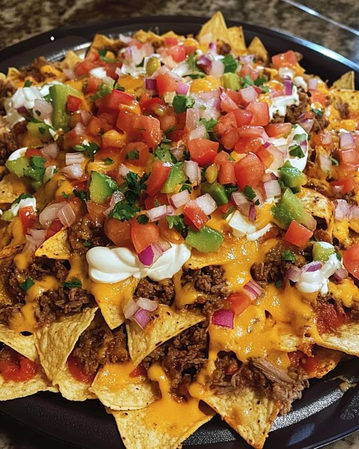

Beef Nachos

Servings: 4
Time Taken: 20 minutes
Ingredients:
- 1 tbsp olive oil
- 1 large onion, finely chopped
- 500g Coles Finest Carbon Neutral Beef Mince
- 300g can kidney beans, drained, rinsed
- 1 tsp Mexican chilli powder
- 35g sachet reduced-salt taco seasoning mix
- 2 tbsp tomato paste
- 1/4 cup water
- 1/2 cup coriander leaves, chopped
- 230g packet corn chips
- 1 cup grated cheddar cheese
- 1/2 cup tomato salsa
- Avocado, diced, to serve
- Light sour cream, to serve
- Fresh coriander, to serve
Method:
- Preheat oven to 200C.
- Heat oil in a non-stick frying pan over medium heat. Cook onion for 2 minutes, or until soft.
- Add mince. Cook, stirring with a wooden spoon, for 5 minutes or until browned.
- Add kidney beans, chilli powder, seasoning, tomato paste and water.
- Reduce heat to medium-low. Simmer for 5 minutes, or until thick. Stir through coriander.
- Arrange corn chips on a heatproof plate. Top with mince. Sprinkle with cheese.
- Bake for 15 minutes, or until hot.
- Top with salsa, avocado, sour cream and coriander. Serve.